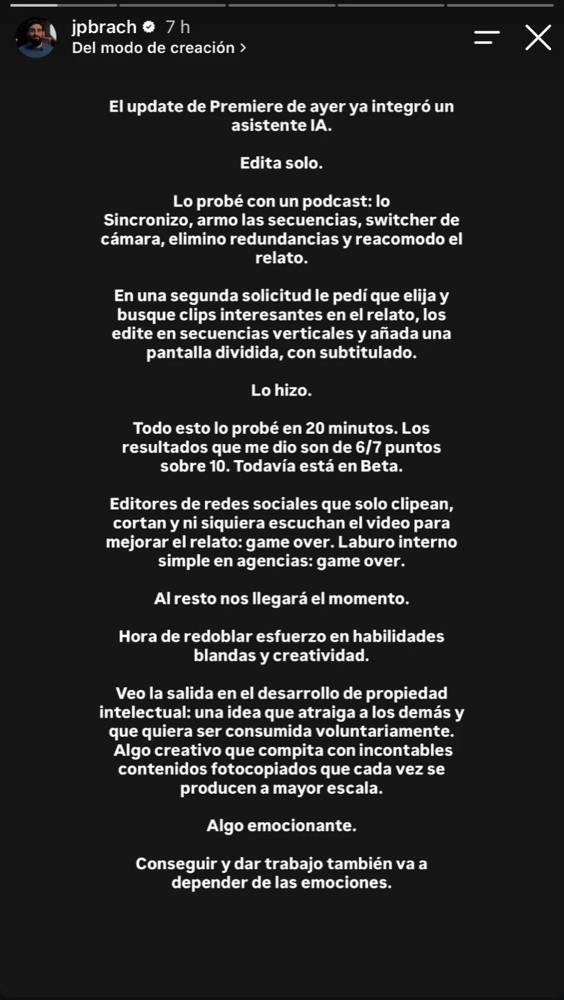
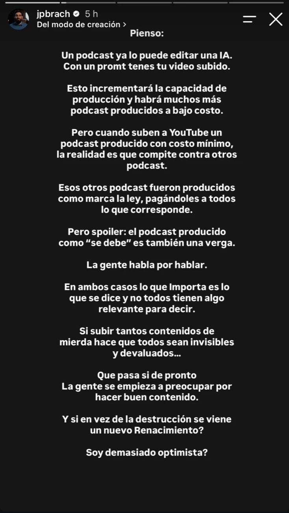

La IA ya edita sola: ¿destrucción o Renacimiento?
El 10 de noviembre Adobe metió un asistente de inteligencia artificial dentro de Premiere. Un día después, el creador audiovisual @jpbrach contó que lo probó con un podcast y le puso un 6 o 7 sobre 10. Sus dos historias abren una pregunta que nos toca a todos los que vivimos de contar con imágenes: si editar deja de ser un oficio escaso, ¿qué es lo que queda?
Por Daniel Espinoza
Dos historias que vale la pena leer completas


Historias publicadas por @jpbrach en Instagram el 11 de noviembre de 2026.
En la primera historia describe la prueba. Le pidió al asistente que sincronizara las cámaras de un podcast, armara las secuencias, hiciera los cambios de plano, quitara lo repetido y reordenara el relato. En una segunda orden le pidió que encontrara los mejores momentos, los pasara a vertical con pantalla dividida y les pusiera subtítulos. Lo hizo. Todo en 20 minutos y todavía en beta.
Su conclusión es dura: para el editor de redes que solo corta y clipea sin escuchar el material, y para el trabajo interno simple de las agencias, se terminó el juego. La salida que propone es crear propiedad intelectual: ideas que la gente quiera consumir por voluntad propia, capaces de competir contra un mar de contenido fotocopiado.
En la segunda historia va más lejos. Si cualquiera puede producir un podcast casi gratis, ese podcast igual va a competir en YouTube contra los que se hicieron con todo el equipo pagado. Y muchos de esos también son malos, porque lo que importa es lo que se dice, y no todos tienen algo relevante para decir. Cierra con una pregunta que me quedó dando vueltas: ¿Soy demasiado optimista?
Este artículo es mi intento de responderle con datos.
Qué cambió el 10 de noviembre
En Adobe MAX 2026, en Miami, Adobe presentó su Creative Agent: un asistente al que le describes una tarea de varios pasos en palabras y la ejecuta dentro del programa. Quedó en beta en Premiere, After Effects, Illustrator, InDesign, Frame.io y la beta de Photoshop. En Premiere, Adobe mostró que puede aplicar efectos a todos los clips de una secuencia, seguir sujetos enmascarados cuadro a cuadro y corregir color y exposición en una secuencia completa.
A eso se suman tres piezas que importan tanto como el asistente:
- Premiere en el celular tendrá su propio asistente, por ahora en beta privada: arma un primer corte editable a partir de lo que describes y convierte un video largo en varios cortos verticales.
- Modo plan en el asistente de Firefly: antes de ejecutar, te muestra la lista de pasos para que la apruebes, y recuerda tus reglas de marca, colores y formatos.
- Agentes de afuera: Adobe anunció una conexión (MCP) para que asistentes como ChatGPT, Claude o Gemini abran y modifiquen archivos de proyecto de Premiere, After Effects, Photoshop e Illustrator guardados en tu computadora. Todavía no está disponible; la beta cerrada apunta a inicios de 2027.
Cada función, por separado, no es tan nueva. Hace años existen complementos que cambian de cámara solos en un podcast, quitan silencios o sacan clips para redes. Lo nuevo es otra cosa: editar deja de ser una habilidad manual y pasa a ser una instrucción, dentro del programa que usa la industria y, pronto, desde cualquier asistente. El 6 sobre 10 de hoy es lo de menos; lo que cuenta es hacia dónde va la curva.
Esto ya pasó antes
Cada vez que una herramienta profesional se vuelve de todos, se repite el mismo movimiento: desaparece la capa de ejecución y sube el valor del criterio.
- 1985PageMaker, la Macintosh y la impresora LaserWriter hacen que diagramar una revista ya no necesite una imprenta. Nace la autoedición.
- 2005–2015YouTube y las cámaras del teléfono: cualquiera graba y publica. El video profesional no murió; la demanda de video explotó.
- 2018–2024Editores en el celular, plantillas y subtítulos automáticos: cualquiera arma un reel.
- 2026Agentes: cualquiera pide un video editado con una frase.
La primera ola dejó una pista clara. Cuarenta años después de PageMaker, en Estados Unidos los maquetadores, el oficio que operaba esas máquinas, son la única ocupación creativa con una caída fuerte proyectada: −12,4 % al 2034. En el mismo periodo, los diseñadores web y de interfaces, que deciden cómo se ve y se usa algo, son la que más crece: +7 %. El oficio de operar se achicó; el de pensar creció.
La avalancha ya está en los números
Lo que plantea @jpbrach, más producción a menor costo, no es una predicción. Ya se mide.
- ≈ 50 %
- de los artículos nuevos en internet son mayormente escritos por IA (49,9 % en el primer trimestre de 2026)
- 86 %
- de los artículos que sí aparecen en Google fueron escritos por personas
- 29 %
- de los podcasts nuevos del tercer trimestre de 2026 fueron generados por IA
- 1 de 10
- de los 4,7 millones de podcasts registrados publicó algo en los últimos 90 días
La lectura es la misma en texto y en audio: producir más no es lo mismo que ser visto. La mitad de lo que se publica ya lo hace una máquina, pero lo que la gente encuentra y consume sigue siendo, en su gran mayoría, hecho por personas. Y de los casi 4,7 millones de podcasts que existen, menos de medio millón sigue vivo. Abrir un podcast siempre fue fácil; sostenerlo con algo que decir, no.
Las plataformas ya reaccionaron. En julio de 2025 YouTube ajustó sus reglas de monetización para identificar mejor el contenido producido en masa y repetitivo, como canales de historias narradas que solo cambian en detalles o presentaciones con la misma voz. Al mismo tiempo, más de mil millones de personas al mes ven podcasts en YouTube. Hay público de sobra; lo que no hay es paciencia para el contenido fotocopiado.
Lo alarmante: el primer peldaño
Sería deshonesto decir que esto es solo una buena noticia. Hay un dato que no se puede ignorar: entre mayo de 2024 y mayo de 2025, el número de editores de cine y video con empleo formal en Estados Unidos bajó de 28.860 a 25.610, un 11,3 % en un año, mientras el salario mediano subió a 75.420 dólares. El propio informe de Adobe que recoge estas cifras lo interpreta como un mercado donde la parte peor pagada del oficio se achicó más rápido que los sueldos. Ojo: son datos de un solo país, no cuentan a los independientes y no se le puede echar toda la culpa a la IA. Pero apuntan justo a lo que describe @jpbrach.
El problema de fondo no es que desaparezca un tipo de trabajo. Es que desaparece el primer peldaño de la escalera. Un editor junior aprende sincronizando, subtitulando, cortando clips y versionando piezas para cada red. Ahí, a fuerza de repetir, desarrolla el oído y el criterio. Si el agente hace todo eso, ¿dónde aprende el próximo editor a distinguir un 6 de un 10? En Ecuador y en la región, donde muchos empiezan justamente editando reels por encargo, esta pregunta es urgente para las agencias y para quienes enseñan.
Hay un segundo riesgo, más silencioso: el precio. Cuando el cliente cree que «eso lo hace la IA», la hora de edición se devalúa aunque detrás haya criterio. Y no partimos de un buen lugar: en la última década, el salario real de los editores de video en Estados Unidos ya cayó un 10,1 %, antes de esta ola.
¿Renacimiento? Sí, pero no para todos
El Renacimiento no ocurrió porque de pronto hubiera más pintura. Ocurrió porque coincidieron técnicas nuevas, gente con algo que decir y mecenas dispuestos a pagar por calidad. La IA es la técnica nueva. Lo que se vuelve escaso, y por lo tanto valioso, es todo lo demás:
- Algo que decir. Un punto de vista, una investigación, una historia que solo tú conoces. La máquina mejora la forma, no inventa la sustancia.
- Criterio. La distancia entre el 6 y el 10 es saber qué cortar, qué dejar y por qué. Eso no se pide con un prompt: se entrena.
- Confianza. En septiembre de 2026, el 65 % de los consumidores estadounidenses dijo que las marcas producen demasiado contenido con IA, y el 57 % que eso les hizo confiar menos en sus mensajes.
- Presencia. Estar ahí: en el evento, en boxes, en la entrevista. Lo que pasó de verdad no se puede generar sin dejar de ser verdad.
- Propiedad intelectual. Un formato, una serie o un personaje que la gente busca por su cuenta. Es la salida que propone @jpbrach, y los datos le dan la razón: en un mar de contenido igual, lo que se busca por nombre propio es lo que sobrevive.
La producción cuidada nunca fue la ventaja. Era una barrera de entrada que disimulaba la falta de ideas. La IA quita el disfraz.
Por eso coincido con lo que dice @jpbrach sobre el podcast «producido como se debe» que igual es malo. Lo que viene es una polarización: abajo, una avalancha de contenido barato que nadie busca; arriba, ideas propias con criterio y confianza que valen más que nunca; y en el medio, apretado, todo lo que está bien producido pero no tiene nada que decir.
Entonces, ¿es demasiado optimista? No, si el optimismo tiene condiciones. Va a ser un Renacimiento para quien use el tiempo que la máquina le devuelve para pensar, investigar y estar presente. Va a ser una destrucción para quien vendía horas de operar un programa.
Qué hacer desde hoy
Si editas o creas contenido
- Pasa de operador a director: aprende a darle instrucciones al agente y a corregirlo. Tu valor está en el salto del 6 al 10.
- Escucha todo el material. El relato es tuyo, no del software.
- Especialízate en lo que exige estar: coberturas, entrevistas, acceso.
- Construye una voz y un formato que sean reconociblemente tuyos.
Si diriges una agencia
- Deja de cobrar horas de edición. Cobra criterio, estrategia y resultados.
- Usa la IA para el volumen interno y reinvierte ese tiempo en ideas.
- Rediseña cómo se forman tus juniors ahora que el trabajo base lo hace la máquina.
- Cuéntale al cliente qué hizo la IA y qué hizo tu equipo. La transparencia también vende.
Si manejas una marca
- Más piezas no es más marca. Antes de pedir volumen, pregunta qué tienes para decir.
- Invierte en una idea propia: una serie, un formato, un personaje que tu audiencia busque.
- Sé transparente cuando uses IA. La confianza es el activo que más rápido se pierde.
- Mide atención y confianza, no cantidad de publicaciones.
Cómo lo veo desde De Marca
Mi especialidad es la cobertura en tiempo real: produzco, edito y publico mientras el evento todavía está pasando. Celebro todo lo que la IA pueda acelerar de la parte mecánica, porque me deja más tiempo para lo que importa. Pero ningún asistente puede generar el momento en que un piloto cruza la meta, ni la confianza de un deportista que te deja entrar a boxes. Ahí está el valor que no se fotocopia.
La herramienta se democratizó. El criterio no. Y por primera vez, eso va a ser lo único que se note.
¿Quieres llevar IA a la comunicación de tu marca sin perder la voz propia?
Fuentes
- @jpbrach, historias de Instagram del 11 de noviembre de 2026. instagram.com/jpbrach
- heise online, «Adobe MAX: AI agents to control Photoshop, Premiere Pro and more», 10 de noviembre de 2026. heise.de
- Digital Production, «Adobe MAX 2026: AI video and audio are most useful before the final cut», 10 de noviembre de 2026. digitalproduction.com
- cut.pro, «Adobe MAX 2026: a Premiere agent, Firefly as a studio and a local MCP». cut.pro
- Adobe, «The Economic State of Creative Professions», edición 1, junio de 2026, con datos del BLS de Estados Unidos (OEWS mayo de 2025 y proyecciones 2024–2034). adobe.com
- Graphite, «AI now writes as many online articles as humans do». graphite.io; Axios, 15 de mayo de 2026. axios.com
- Barrett Media, «AI-Generated Podcasts Are Booming, and Personality Is the Industry's Best Defense», 13 de octubre de 2026, con datos de Listen Notes. barrettmedia.com
- Libsyn, estadísticas de podcasts, actualizadas en septiembre de 2026, con datos del Podcast Index. libsyn.com
- 9to5Google, «YouTube Podcasts hits 1 billion monthly active viewers», 26 de febrero de 2025. 9to5google.com
- BetaNews, «YouTube is fighting AI slop with new monetization guidelines», 10 de julio de 2025. betanews.com
- Gartner, encuesta de marketing a consumidores, 22 de septiembre de 2026. gartner.com
- Computer History Museum, historia de la autoedición. computerhistory.org